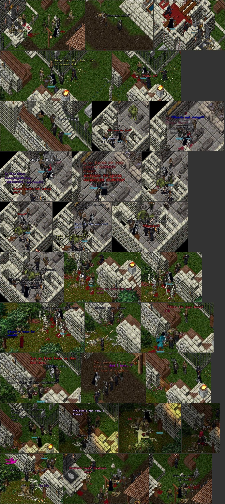

A lot of screenshot utilities have been and gone over the years, but there was never one that quite suited my workflow in creating reports. I made this for myself and for you. I hope you find it useful.
The final output of the tool is something like:
